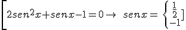
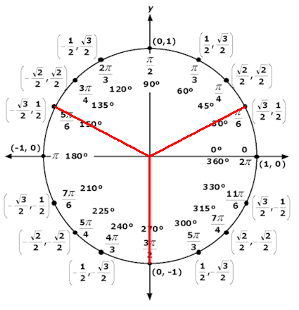
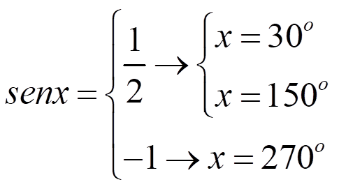
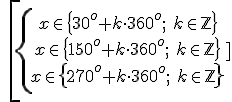

Una ecuación trigonométrica es una ecuación con la incógnita en una razón trigonométrica. Por ejemplo: cos2x = senx
Para resolverlas, debemos seguir los siguientes pasos:
- Aplica las fórmulas para dejar un solo ángulo:
cos2 x-sen2 x=sen x
- Y haz que las razones sean del mismo tipo:
1 – sen2 x - sen2 x = sen x
- Resuelve la ecuación como si la razón trigonométrica fuera la incógnita:

\[2se{{n}^{2}}x+senx-1=0\to \quad senx=\left\{ \begin{align} & \frac{1}{2} \\ & -1 \\ \end{align} \right.\]
- Calcula el ángulo con la ayuda de un dibujo:
 
5. Escribe el conjunto de soluciones añadiendo un número entero de circunferencias. Si el ángulo es una función de x, despeja la incógnita.

Ejercicio. Resuelve las siguientes ecuaciones:
a) sen 2x = tgx
b) senx + sen2x + sen3x = 0
c) tgx · secx = √2
d) 2sen4x - 7cos2x + 3 = 0
Soluciones:
a) x €{45o + k90o, k€Ζ}, x €{k180o, k€Ζ}
b) x €{k90o, k€Ζ}, x €{120o + k360o, k€Ζ}, x €{240o + k360o, k€Ζ}
c) x €{45o + k360o, k€Ζ}, x €{135o + k360o, k€Ζ}
d) x €{45o + k90o, k€Ζ}